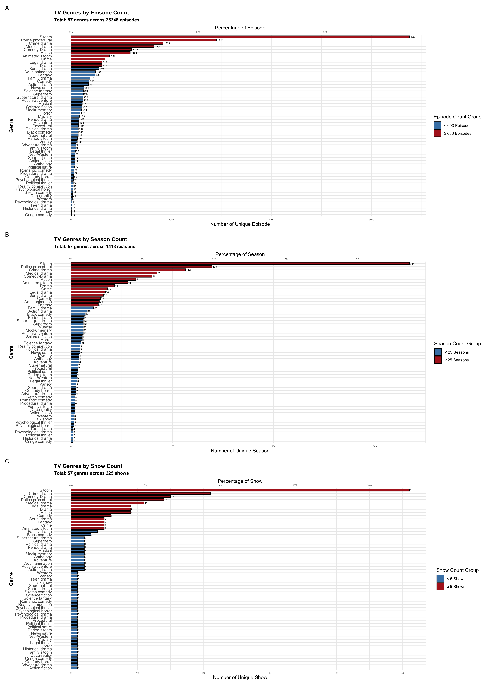

| Summary Item | Value |
|---|---|
| Number of Rows (Episodes) | 25350 |
| Number of Unique Shows | 225 |
| Number of Unique Genres | 57 |
| Air Date Range | 1988-10-06 to 2065-03-12 |
| Season Number Range | 1 to 34 |
| Episode Number Range | 1 to 52 |
Dataset Overview
1 Dataset Overview
1.1 Data Loading, Data Cleaning & Data Quality Check
First, we load the dataset and perform initial quality checks to identify potential issues like missing data, duplicates, and anomalies.
Data Clean Plan (Handle Missing Value in award-related variables)
| Variable Name | Original Type | Stats | Issue | Cleaning Action |
|---|---|---|---|---|
| imdb_episode_rating_score | float64 | 6 missing values | Missing due to page not including ratings | Leave as-is; keep NaNs |
| imdb_episode_votes_num | object | 6 missing; mixed int/‘K’ suffix | Mixed numeric format: integers vs. ‘1.1K’-style abbreviations | Convert ‘K’ values to float; parse others as float |
| rt_season_all_critics_score | object | 12,607 missing(~50%); includes ‘0’, ‘%’ | Percent strings; some ‘0’ or ‘Not Found’ values not usable | Convert percent to float (0–1); ‘0’ and ‘Not Found’ → NaN |
| rt_season_all_audience_score | object | 2,623 missing; includes ‘0’, ‘%’ | Same issues as critics score | Same as above |
| rt_season_all_critics_num | object | 139 missing; includes ‘0’, commas | Contains ‘0’, ‘Not Found’; comma-separated values | ‘0’ and ‘Not Found’ → NaN; remove commas; convert to float |
| rt_season_all_audience_num | object | 133 missing; categorical bands | Values like ‘Fewer’, ‘50+’, ‘5000+’ need interpretation | Estimate numeric midpoints; ‘Fewer’ → 25; ‘0’/‘Not Found’ → NaN |
Note: The air_date range seems weird, which is likely due to a prasing error. We can fix this by correcting the date format to ensure proper recognition and consistency.
Corrected Air Date Range:[1] "1964-09-17" "2024-02-13" Date[1:25350], format: "2011-09-19" "2011-09-26" "2011-10-03" "2011-10-10" "2011-10-24" ...| Variable | # Missing | % Missing |
|---|---|---|
| rt_season_all_critics_score | 12655 | 49.92 |
| rt_season_all_critics_num | 3608 | 14.23 |
| rt_season_all_audience_score | 2671 | 10.54 |
| rt_season_all_audience_num | 383 | 1.51 |
| imdb_episode_rating_score | 6 | 0.02 |
| imdb_episode_votes_num | 6 | 0.02 |
Note: After cleaning the reward-related data, the missing values observed here are due to incomplete records in the original data sources. We will handle those missing value in our section of reward-related variable analysis
Number of duplicated rows: 0| show | season | episode | air_date | genre | viewership_(millions) | sd_div_mean_2 | sd_div_mean_3 |
|---|---|---|---|---|---|---|---|
| 2 Broke Girls | 2 | 16 | 2013-02-11 | Sitcom | 10.90 | 5402.281 | 6811.773 |
| 2 Broke Girls | 2 | 16 | 2013-02-11 | Sitcom | 10.90 | 4067.491 | 7736.070 |
| 2 Broke Girls | 2 | 17 | 2013-02-18 | Sitcom | 10.25 | 9969.825 | 10083.607 |
| 2 Broke Girls | 2 | 17 | 2013-02-18 | Sitcom | 10.25 | 3492.432 | 4841.886 |
- 2 Broke Girls, Season 2, Episodes 16 and 17 each appear twice in our raw dataset: their viewership is the same, but their narrative variables differ
- I choose to keep only the first row for each episode
1.2 Cleaned metadata summary
| Summary Item | Value |
|---|---|
| Number of Rows (Episodes) | 25348 |
| Number of Unique Shows | 225 |
| Number of Unique Genres | 57 |
| Air Date Range | 1964-09-17 to 2024-02-13 |
| Season Number Range | 1 to 34 |
| Episode Number Range | 1 to 52 |
1.2.1 TV Episode and Season Trends by 2-Year Period
Within this dataset, both the total number of episodes and the count of unique seasons starting per 2-year period show a similar trend, rising from the early 1990s to a peak in the mid-2010s before decreasing.
1.2.2 TV Genres Distibutions: Episode-, Season-, and Show-Level Counts by 2-Year Period

| Genre | # Episodes | % Episodes | Episode Group | # Seasons | % Seasons | Season Group | # Shows | % Shows | Show Group |
|---|---|---|---|---|---|---|---|---|---|
| Action | 1181 | 4.7% | ≥ 600 Episodes | 64 | 4.5% | ≥ 25 Seasons | 9 | 4.0% | ≥ 5 Shows |
| Action drama | 351 | 1.4% | < 600 Episodes | 16 | 1.1% | < 25 Seasons | 2 | 0.9% | < 5 Shows |
| Action fiction | 76 | 0.3% | < 600 Episodes | 4 | 0.3% | < 25 Seasons | 1 | 0.4% | < 5 Shows |
| Action-adventure | 235 | 0.9% | < 600 Episodes | 12 | 0.8% | < 25 Seasons | 2 | 0.9% | < 5 Shows |
| Adult animation | 489 | 1.9% | < 600 Episodes | 28 | 2.0% | ≥ 25 Seasons | 2 | 0.9% | < 5 Shows |
| Adventure | 154 | 0.6% | < 600 Episodes | 8 | 0.6% | < 25 Seasons | 2 | 0.9% | < 5 Shows |
| Adventure drama | 96 | 0.4% | < 600 Episodes | 5 | 0.4% | < 25 Seasons | 1 | 0.4% | < 5 Shows |
| Animated sitcom | 769 | 3.0% | ≥ 600 Episodes | 56 | 4.0% | ≥ 25 Seasons | 5 | 2.2% | ≥ 5 Shows |
| Anthology | 75 | 0.3% | < 600 Episodes | 8 | 0.6% | < 25 Seasons | 2 | 0.9% | < 5 Shows |
| Black comedy | 145 | 0.6% | < 600 Episodes | 14 | 1.0% | < 25 Seasons | 3 | 1.3% | < 5 Shows |
| Comedy | 363 | 1.4% | < 600 Episodes | 29 | 2.1% | ≥ 25 Seasons | 6 | 2.7% | ≥ 5 Shows |
| Comedy horror | 50 | 0.2% | < 600 Episodes | 5 | 0.4% | < 25 Seasons | 1 | 0.4% | < 5 Shows |
| Comedy-Drama | 1208 | 4.8% | ≥ 600 Episodes | 80 | 5.7% | ≥ 25 Seasons | 15 | 6.7% | ≥ 5 Shows |
| Crime | 678 | 2.7% | ≥ 600 Episodes | 36 | 2.5% | ≥ 25 Seasons | 5 | 2.2% | ≥ 5 Shows |
| Crime drama | 1835 | 7.2% | ≥ 600 Episodes | 113 | 8.0% | ≥ 25 Seasons | 21 | 9.3% | ≥ 5 Shows |
| Cringe comedy | 13 | 0.1% | < 600 Episodes | 2 | 0.1% | < 25 Seasons | 1 | 0.4% | < 5 Shows |
| Docu-reality | 28 | 0.1% | < 600 Episodes | 4 | 0.3% | < 25 Seasons | 1 | 0.4% | < 5 Shows |
| Drama | 613 | 2.4% | ≥ 600 Episodes | 43 | 3.0% | ≥ 25 Seasons | 9 | 4.0% | ≥ 5 Shows |
| Family drama | 378 | 1.5% | < 600 Episodes | 22 | 1.6% | < 25 Seasons | 4 | 1.8% | < 5 Shows |
| Family sitcom | 95 | 0.4% | < 600 Episodes | 4 | 0.3% | < 25 Seasons | 1 | 0.4% | < 5 Shows |
| Fantasy | 482 | 1.9% | < 600 Episodes | 27 | 1.9% | ≥ 25 Seasons | 5 | 2.2% | ≥ 5 Shows |
| Historical drama | 15 | 0.1% | < 600 Episodes | 2 | 0.1% | < 25 Seasons | 1 | 0.4% | < 5 Shows |
| Horror | 177 | 0.7% | < 600 Episodes | 11 | 0.8% | < 25 Seasons | 1 | 0.4% | < 5 Shows |
| Legal drama | 615 | 2.4% | ≥ 600 Episodes | 34 | 2.4% | ≥ 25 Seasons | 9 | 4.0% | ≥ 5 Shows |
| Legal thriller | 90 | 0.4% | < 600 Episodes | 6 | 0.4% | < 25 Seasons | 1 | 0.4% | < 5 Shows |
| Medical drama | 1654 | 6.5% | ≥ 600 Episodes | 85 | 6.0% | ≥ 25 Seasons | 11 | 4.9% | ≥ 5 Shows |
| Mockumentary | 213 | 0.8% | < 600 Episodes | 12 | 0.8% | < 25 Seasons | 2 | 0.9% | < 5 Shows |
| Musical | 222 | 0.9% | < 600 Episodes | 12 | 0.8% | < 25 Seasons | 2 | 0.9% | < 5 Shows |
| Mystery | 173 | 0.7% | < 600 Episodes | 8 | 0.6% | < 25 Seasons | 1 | 0.4% | < 5 Shows |
| Neo-Western | 78 | 0.3% | < 600 Episodes | 6 | 0.4% | < 25 Seasons | 1 | 0.4% | < 5 Shows |
| News satire | 254 | 1.0% | < 600 Episodes | 9 | 0.6% | < 25 Seasons | 1 | 0.4% | < 5 Shows |
| Period drama | 162 | 0.6% | < 600 Episodes | 13 | 0.9% | < 25 Seasons | 2 | 0.9% | < 5 Shows |
| Period sitcom | 126 | 0.5% | < 600 Episodes | 6 | 0.4% | < 25 Seasons | 1 | 0.4% | < 5 Shows |
| Police procedural | 2905 | 11.5% | ≥ 600 Episodes | 139 | 9.8% | ≥ 25 Seasons | 14 | 6.2% | ≥ 5 Shows |
| Political drama | 145 | 0.6% | < 600 Episodes | 9 | 0.6% | < 25 Seasons | 2 | 0.9% | < 5 Shows |
| Political satire | 65 | 0.3% | < 600 Episodes | 7 | 0.5% | < 25 Seasons | 1 | 0.4% | < 5 Shows |
| Political thriller | 43 | 0.2% | < 600 Episodes | 2 | 0.1% | < 25 Seasons | 1 | 0.4% | < 5 Shows |
| Procedural | 149 | 0.6% | < 600 Episodes | 7 | 0.5% | < 25 Seasons | 1 | 0.4% | < 5 Shows |
| Procedural drama | 59 | 0.2% | < 600 Episodes | 4 | 0.3% | < 25 Seasons | 1 | 0.4% | < 5 Shows |
| Psychological drama | 18 | 0.1% | < 600 Episodes | 2 | 0.1% | < 25 Seasons | 1 | 0.4% | < 5 Shows |
| Psychological horror | 38 | 0.1% | < 600 Episodes | 3 | 0.2% | < 25 Seasons | 1 | 0.4% | < 5 Shows |
| Psychological thriller | 45 | 0.2% | < 600 Episodes | 3 | 0.2% | < 25 Seasons | 1 | 0.4% | < 5 Shows |
| Reality competition | 42 | 0.2% | < 600 Episodes | 9 | 0.6% | < 25 Seasons | 1 | 0.4% | < 5 Shows |
| Romantic comedy | 59 | 0.2% | < 600 Episodes | 4 | 0.3% | < 25 Seasons | 1 | 0.4% | < 5 Shows |
| Science fantasy | 248 | 1.0% | < 600 Episodes | 10 | 0.7% | < 25 Seasons | 1 | 0.4% | < 5 Shows |
| Science fiction | 217 | 0.9% | < 600 Episodes | 11 | 0.8% | < 25 Seasons | 1 | 0.4% | < 5 Shows |
| Serial drama | 558 | 2.2% | < 600 Episodes | 32 | 2.3% | ≥ 25 Seasons | 5 | 2.2% | ≥ 5 Shows |
| Sitcom | 6753 | 26.6% | ≥ 600 Episodes | 334 | 23.6% | ≥ 25 Seasons | 51 | 22.7% | ≥ 5 Shows |
| Sketch comedy | 32 | 0.1% | < 600 Episodes | 4 | 0.3% | < 25 Seasons | 1 | 0.4% | < 5 Shows |
| Sports drama | 76 | 0.3% | < 600 Episodes | 5 | 0.4% | < 25 Seasons | 1 | 0.4% | < 5 Shows |
| Superhero | 247 | 1.0% | < 600 Episodes | 12 | 0.8% | < 25 Seasons | 2 | 0.9% | < 5 Shows |
| Supernatural | 144 | 0.6% | < 600 Episodes | 7 | 0.5% | < 25 Seasons | 1 | 0.4% | < 5 Shows |
| Supernatural drama | 235 | 0.9% | < 600 Episodes | 12 | 0.8% | < 25 Seasons | 2 | 0.9% | < 5 Shows |
| Talk show | 13 | 0.1% | < 600 Episodes | 3 | 0.2% | < 25 Seasons | 1 | 0.4% | < 5 Shows |
| Teen drama | 16 | 0.1% | < 600 Episodes | 2 | 0.1% | < 25 Seasons | 1 | 0.4% | < 5 Shows |
| Variety | 124 | 0.5% | < 600 Episodes | 5 | 0.4% | < 25 Seasons | 1 | 0.4% | < 5 Shows |
| Western | 24 | 0.1% | < 600 Episodes | 3 | 0.2% | < 25 Seasons | 1 | 0.4% | < 5 Shows |
Grouping by Name/Typical Characteristics (A Priori Assumptions)
Grouping for Narrative/Reward Pattern Exploration
This aims to create groups that are thematically coherent and likely to show meaningfully different narrative signatures or reward patterns. It blends the above approaches.
- Group 1: Sitcoms (Distinct comedic format)
- Group 2: Procedurals (Combine Police, Medical, Legal, Crime Drama, Procedural, Legal Thriller - share case-of-the-week structure)
- Group 3: Serialized Dramas (Combine Serial Drama, Drama, Comedy-Drama, Family Drama, Teen Drama, Period Drama, Political Drama, Historical Drama, Psychological Drama - focus on ongoing arcs/character)
- Group 4: Genre Fiction (Combine Action, Fantasy, Sci-Fi, Superhero, Horror, Supernatural, Western, Adventure - includes subgenres like Action Drama, Comedy Horror etc.)
- Group 5: Animation (Combine Animated Sitcom, Adult Animation)
- Group 6: Alternative Comedy (Combine Comedy (generic), Black Comedy, Mockumentary, Satire*, Musical, Cringe, Romantic, Sketch, Period Sitcom)
- Group 7: Thrillers/Mystery (Combine Psychological Thriller, Political Thriller, Mystery - distinct from procedural crime)
- Group 8: Reality/Other (Combine Reality Comp, Docu-reality, Talk, Variety, Anthology - likely exclude from some narrative comparisons)
Categorizing Groups under Profit vs. Prestige Context
- Likely Profit-Focused Tendency:
- Group 1: Sitcoms: High volume, longevity aim.
- Group 2: Procedurals: Proven format for long runs, syndication.
- (Part of) Group 5: Animation (specifically broad appeal Animated Sitcoms)
- Group 8: Reality/Other (often lower cost, format driven)
- Likely Prestige-Focused Tendency / Higher Variability:
- Group 3: Serialized Dramas: Often target awards, critical acclaim, complex narratives (though some achieve high profit).
- Group 6: Alternative Comedy: Often critically favored, niche audiences.
- Group 7: Thrillers/Mystery: Can be prestigious, often shorter/contained runs.
- (Part of) Group 5: Animation (specifically Adult Animation aiming for niche/critical demo)
- Mixed / High Potential for Both:
- Group 4: Genre Fiction: Can be massive Profit drivers (MCU, GoT) or gain Prestige through execution/themes. Success highly variable.
| Simple_Category | Genres |
|---|---|
| Drama | Action, Action drama, Action fiction, Action-adventure, Adventure, Adventure drama, Anthology, Crime, Crime drama, Drama, Fantasy, Family drama, Historical drama, Horror, Legal drama, Legal thriller, Medical drama, Mystery, Neo-Western, Period drama, Political drama, Political thriller, Police procedural, Procedural, Procedural drama, Psychological drama, Psychological horror, Psychological thriller, Science fantasy, Science fiction, Serial drama, Sports drama, Superhero, Supernatural, Supernatural drama, Teen drama, Western |
| Comedy | Animated sitcom, Black comedy, Comedy, Comedy-Drama, Comedy horror, Cringe comedy, Family sitcom, Mockumentary, Musical, News satire, Period sitcom, Political satire, Romantic comedy, Sitcom, Sketch comedy, Adult animation |
| Other / Exclude | Docu-reality, Reality competition, Talk show, Variety |